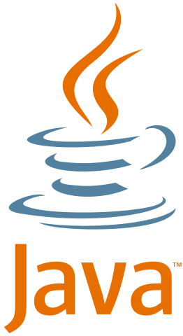

WEB
- HTML
- CSS
- JaveScript
hello web
java란?

썬 마이크로시스템즈에서 1995년에 개발한 객체 지향 프로그래밍 언어. 창시자는 제임스 고슬링이다. 2010년에 썬이 오라클에 인수되어서 현재 Java의 저작권자는 오라클이며, 2019년 1월부터 유료화되었다. 단, Java EE는 이클립스 재단의 소유이다.
처음엔 고슬링 사무실 앞에 있는 참나무에서 따와 OAK로 지었다가 그대로 상표로 등록하기엔 문제가 생겨서[1] 컨설턴트가 극단적인 방법을 도입, 오후에 개발진들을 회의실에 가둬서(...) 마라톤 회의를 시켰다. "기분이 어떤가요"(Excited!), "무엇이 당신 기분을 좋게 만드나요?"(Java coffee!) 같은 연상적인 작용을 거쳐 여러가지 이름을 정하고, 그 중에서 자바 커피의 Java를 선택했다. Java는 랭킹 중 네 번째. 리스트의 첫 번째 이름은 Silk였고 고슬링이 가장 좋아했던 이름은 Lyrics, 세 번째에 올라왔던 이름이라고.
개발진이 자바산 커피를 좋아해서 그랬다는 설도 있다. 아이콘도 커피잔 모양. 또는 개발자의 이름인 James Gosling, Arthur Van Hoff, Andy Bechtolsheim의 머릿글자를 따온 것이라는 설도 있고, 그냥 사전을 펼쳤는데 눈에 들어온 이름이었다는 설도 있다. 그런데 막 지은 것 치고는 크게 흥하여 썬이 자사의 나스닥 코드를 SUNW에서 JAVA로 바꾸었을 정도로 이제는 썬의 상징이자, 근데 그 썬이 오라클에 인수돼서 사라진 건 함정 세계적으로도 널리 알려진 단어가 되었다. 출처
| name |
jingu |
hong |
gon |
daeho |
pill |
| point |
55 |
66 |
88 |
75 |
65 |